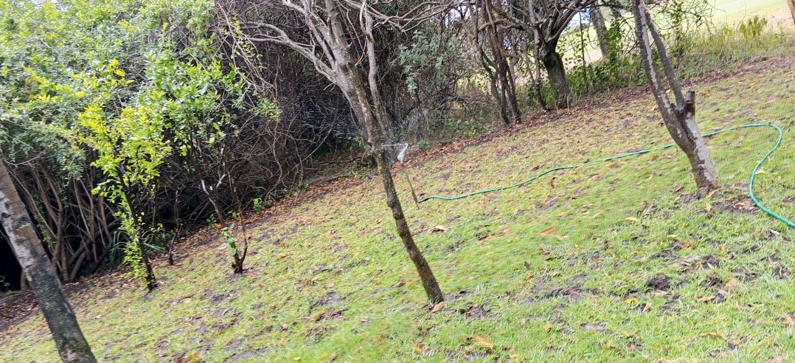

Mucheru World of Golf
Comprehensive golf course construction, earthwork reshaping, drainage excavation, and arboriculture advanced rapidly across active holes and water reservoirs under the direct leadership of Mr. Gichuhi and Ken:
- Architectural Reshaping of Putting Greens 4 & 18 to Bean Shape: Construction teams executed precision contour adjustments on Putting Green No. 18 and Putting Green No. 4, re-profiling the circular sub-bases into organic, kidney/bean-shaped green complexes. This architectural contouring creates dynamic pin-placement zones, varied approach angles, and natural undulations that integrate seamlessly into surrounding red soil collars.
- Championship Teebox Upgrades — Reshaping (Tees 13 & 14) & Expansion (Tee 17): Earthwork re-profiling advanced across three championship teeboxes. Teeboxes 13 and 14 were completely reshaped, laser-leveled, and contour-adjusted to match fairway centerlines. Teebox 17 was significantly widened and expanded, increasing usable teeing surface area and enhancing launch platform capacity for varied player handicaps.
- Green No. 7 Subgrade Drainage Trenching Commenced: Ground civil crews began active excavation of subterranean drainage lateral channels across Green No. 7. Following yesterday's layout staking and white lime contour marking, laborers cut deep drainage invert trenches through the subgrade matrix to tie future perforated pipes into external outfall corridors.
- Bulk Earthmoving & Murram Soil Relocation Outside Dam 1: Utilizing the farm tractor with trailer haulage, operators transported excavated murram soil from the Dam 1 excavation basin to designated stabilization zones outside the reservoir perimeter. The relocated murram is being systematically leveled to form structural embankments and graded berms.
- Dam 2 Perimeter Marking for Dumping Spots & Dam Liner Installation: Surveyors and site engineers completed comprehensive ground markings all around the perimeter of Dam 2. These clear markers establish designated spoil-dumping zones for incoming earth and delineate the exact contour lines required for setting up the synthetic impermeable dam liner.
- Arboriculture — Red Loam Backfilling in Palm Tree Planting Basins: Agricultural crew members transported high-grade red volcanic topsoil from stockpiles to backfill deep planting holes along the golf course perimeter tree lines. Enriching these basins with fertile loam provides optimal root aeration and nutrient retention for newly established ornamental palm trees.
Key Accomplishments — Mucheru World of Golf
Greens 4 and 18 successfully reshaped to organic bean shapes; Teeboxes 13 and 14 reshaped and Teebox 17 widened; subgrade drainage trenching actively launched on Green 7; farm tractor murram relocation progressing smoothly outside Dam 1; Dam 2 perimeter marked for dumping and liner installation; and palm tree planting holes backfilled with rich red soil.
🎥 Mucheru World of Golf — Site Operations Progress Video (September 16, 2026)
Field video recording documenting the architectural bean reshaping of Greens 4 and 18, teebox earthwork adjustments on Tees 13, 14, and 17, Green 7 drainage trenching, tractor murram relocation at Dam 1, and Dam 2 liner preparation markings.
Comprehensive 18-hole putting green engineering audit detailing foundation matrices, pumice aggregate leveling, architectural contouring, and subterranean drainage outfalls. Highlighting incremental progress achieved on September 16, 2026:
| Green | Current Technical & Agronomic State | Milestone Status |
|---|---|---|
| Green 1 | Red volcanic loam spread; volcanic pumice aggregate applied and leveled; subgrade drainage trenches excavated (Sep 15). | Trenched & Pumice Leveled |
| Green 2 | Red volcanic loam spread; volcanic pumice aggregate applied and leveled; subgrade drainage trenches excavated (Sep 15). | Trenched & Pumice Leveled |
| Green 3 | Red volcanic loam spread; volcanic pumice applied and leveled; subgrade drainage trenches excavated (Sep 15); fairway 4 approach leveled. | Trenched & Pumice Leveled |
| Green 4 Today | Architectural contouring executed: reshaped into organic bean-shaped complex (Sep 16); red volcanic loam spread; volcanic pumice applied and leveled; subgrade drainage trenched; fairway playing corridor cleared. | Reshaped (Bean) & Trenched |
| Green 5 | Ready. Fully established mature championship putting green turfgrass under active pop-up sprinkler irrigation conditioning. | Ready • Established Turf |
| Green 6 | Riversand added and leveled during initial construction stages; red volcanic loam spread; subgrade drainage trenches excavated (Sep 15); perimeter containment berm shaped. | Riversand Leveled |
| Green 7 Today | Subgrade drainage trenching actively excavated across layout grid (Sep 16); white lime grade contours established; sub-base preparation advancing. | Trenched & Subgrade Prep |
| Green 8 | Riversand applied during earlier phases but remains unleveled; red volcanic loam spread; subgrade drainage trenches excavated (Sep 15); surrounding slopes graded. | Riversand Unleveled |
| Green 9 | Architectural shaping completed; red volcanic loam spread; volcanic pumice applied and graded; subgrade drainage trenches excavated (Sep 15). | Trenched & Pumice Graded |
| Green 10 | Hardcore foundation fractured; perforated PVC drainage lines net-wrapped; red volcanic loam spread; volcanic pumice applied and leveled; drainage trench cut (Sep 14). | Pumice Leveled & Trenched |
| Green 11 | Hardcore sub-base stabilized; separation membrane placed; red volcanic loam spread; volcanic pumice aggregate spread and leveled; subgrade drainage trenches excavated. | Trenched & Pumice Leveled |
| Green 12 | Hardcore stone foundation packed; separation membrane placed; red volcanic loam spread; volcanic pumice aggregate spread and leveled; subgrade drainage trenches excavated. | Trenched & Pumice Leveled |
| Green 13 | Hardcore rock fractured; red volcanic loam spread; volcanic pumice leveled; subgrade drainage trenches excavated (Sep 14). | Trenched & Pumice Leveled |
| Green 14 | Hardcore base and moisture-barrier membrane installed; red volcanic loam spread; volcanic pumice sub-base graded; sole remaining green on course awaiting drainage trench excavation. | Awaiting Final Trenching |
| Green 15 | Hardcore rock fractured; separation membrane installed; red volcanic loam spread; volcanic pumice graded; subgrade drainage trenches excavated (Sep 14). | Trenched & Pumice Graded |
| Green 16 | Hardcore foundation bed fractured and packed; separation membrane installed; red volcanic loam spread; volcanic pumice graded; subgrade drainage trenches excavated (Sep 14). | Trenched & Pumice Graded |
| Green 17 | Hardcore rock grid packed; red volcanic loam spread; separation membrane installed; volcanic pumice graded; subgrade drainage trenches excavated (Sep 14). | Trenched & Pumice Graded |
| Green 18 Today | Architectural contouring executed: putting green reshaped to organic bean shape (Sep 16); hardcore rock fractured; red volcanic loam spread across foundation and collars; volcanic pumice aggregate leveled; subgrade drainage trenched. | Reshaped (Bean) & Trenched |
Comprehensive 18-hole championship teebox platform audit tracking precision earthwork leveling, structural embankments, and playing corridor alignments. Highlighting updates on September 16, 2026:
| Teebox | Current Technical & Earthwork State | Platform Status |
|---|---|---|
| Tee 1 | Platform leveled, graded, and compacted with mass murram fill during course bulk earthmoving. | Platform Leveled |
| Tee 2 | Foundation fill dumped and platform rough-leveled using 8 tipper truckloads of structural fill. | Fill Placed & Leveled |
| Tee 3 | Foundation fill dumped and platform rough-leveled using 8 tipper truckloads of structural fill. | Fill Placed & Leveled |
| Tee 4 | Championship launch platform precision-graded and leveled to design elevation. | Precision Leveled |
| Tee 5 | Playing platform leveled, compacted, and adjusted to align with fairway playing corridor. | Platform Compacted |
| Tee 6 | Precision leveling and compaction completed along the boundary tree corridor. | Platform Leveled |
| Tee 7 | Finalized. Elevated plateau leveled, compacted, and reinforced with a perimeter protective earth berm along fence line. | Finalized • Berm Complete |
| Tee 8 | Graded, leveled, and contour-adjusted to match fairway transitions and surrounds. | Contour Adjusted |
| Tee 9 | Playing platform leveled and surrounding perimeter ground graded (Sep 1). | Platform Leveled |
| Tee 10 | Graded and compacted platform serving the start of the back-nine playing corridor. | Platform Compacted |
| Tee 11 | Rough shaping, elevation grading, and Backhoe subsoil leveling completed (Sep 7). | Shaped & Graded |
| Tee 12 | Dual platforms established: primary championship tee resized; new forward Ladies' Tee platform constructed (Sep 5). | Dual Platforms Complete |
| Tee 13 Today | Playing platform completely reshaped, contour-leveled, and perimeter shoulders graded to match fairway transition (Sep 16). | Reshaped & Leveled |
| Tee 14 Today | Playing platform reshaped, elevation precision-leveled, and protective boundary embankment reinforced (Sep 16). | Reshaped & Leveled |
| Tee 15 | Leveled platform and primary irrigation tie-in zone; main HDPE waterline laid along boundary trench from gate to Tee 15 (Sep 15). | Irrigation Mainline Node |
| Tee 16 | Platform leveled, filled, and surface contours profiled. | Profile Graded |
| Tee 17 Today | Playing platform widened and expanded to increase launch surface area; filled, compacted, and edge transitions graded (Sep 16). | Widened & Leveled |
| Tee 18 | Championship tee platform leveled; perimeter approach cleared and graded (Sep 1). | Platform Leveled |
Operations Synthesis
Subgrade drainage trenching has commenced on Green No. 7, bringing total course green trenching progress to 18 of 18 greens having received trenching works (with Green 14 scheduled for final excavation). Architectural reshaping has enhanced Greens 4 and 18 into organic bean configurations with superior drainage runoff. Teebox platforms 13 and 14 underwent complete precision reshaping, while Teebox 17 was widened to expand championship launch capacity. Bulk murram relocation outside Dam 1 and Dam 2 perimeter liner marking are actively optimizing course earthworks.
Comprehensive visual documentation capturing green architectural bean reshaping, teebox leveling and widening, subgrade drainage trenching on Green 7, tractor murram relocation, Dam 2 liner markings, and palm tree planting hole soil enrichment.

Putting Green 18 — Architectural Bean Reshaping
Overview of Green No. 18 contoured into an organic bean shape, showing leveled pumice sub-base, collar borders, and surrounding fairway grading.

Putting Green 4 — Bean Contour Reshaping
Ground crew executing precision manual shaping and edge alignment on Green No. 4, transitioning the complex into an undulating bean-shaped layout.

Teebox 13 — Platform Reshaping & Leveling
Finished playing platform of Teebox 13, cleanly graded, leveled, and aligned with the hole fairway corridor following earthwork adjustments.

Teebox 14 — Precision Platform Re-Profiling
Teebox 14 playing platform reshaped and compacted, featuring defined perimeter transitions and reinforced boundary soil embankments.

Teebox 17 — Platform Expansion & Widening
Championship Teebox 17 playing platform widened and leveled to provide expanded surface area and versatile tee marker placement.

Teebox Earthwork — Grade & Contour Profiling
Site workers utilizing hand tools and rake leveling to refine elevation grades and shoulder tapers on active championship teebox platforms.

Integrated Earthmoving — Teebox Shaping & Tractor Haulage
Synchronized operations showing teebox platform grading progressing alongside farm tractor haulage of excavated murram soil to designated embankment zones.

Green No. 7 — Subgrade Drainage Trenching
Ground crew excavating subgrade drainage channels across Green No. 7, cutting deep trenches into the foundation matrix to connect subterranean drainage pipes.

Green No. 7 — Drainage Network Progression
Detailed view of workers cutting linear drainage outfall channels through the red soil collar on Green No. 7 to ensure rapid water evacuation.

Dam 1 Outskirts — Tractor Murram Relocation
The farm tractor and trailer moving excavated murram soil from Dam 1 to designated perimeter stabilization positions to build structured retaining berms.

Dam 2 Perimeter — Dumping Zones & Liner Alignment
Site engineers setting boundary markers all around Dam 2 to delineate designated spoil dumping spots and prepare the perimeter for synthetic liner fitting.

Course Arboriculture — Palm Planting Basins
Deep circular tree planting holes along course corridors backfilled with fertile red volcanic loam to foster root development for newly planted palms.

Perimeter Tree Alignment — Soil Backfilling Crew
Agricultural laborers systematically shoveling and backfilling rich red loam into tree planting pits along the golf course boundary fence.
Civil Engineering & Course Architecture Synthesis
The simultaneous execution of bean contour reshaping on Greens 4 & 18, teebox expansion on Tee 17, Green 7 drainage trenching, and Dam 1/2 earthwork profiling represents synchronized progress across all civil disciplines, maintaining course development on schedule.
Chaka Farms
Dairy livestock husbandry, critical water infrastructure upgrades, canine obedience drills, and estate compound maintenance proceeded smoothly at Chaka Farms:
- Dairy Cow Milking Yield (Gross Production): Kamandau executed the morning and evening milking sessions, recording a cumulative gross production of 5.0 Litres (strictly recorded in Litres: 2.5L morning yield and 2.5L evening yield).
-
Rations & Deductions Reconciliation: An exact total of 2.0 Litres was disbursed directly out of the gross milking yield for livestock nutrition and authorized staff rations:
- • Goat Kids Ration: 1.0 Litre total (0.5L morning ration + 0.5L evening ration for young stock nourishment).
- • Staff Allocation — Gladys: 0.5 Litres.
- • Staff Allocation — Maasai: 0.5 Litres.
- Net Remaining Farm Milk Reserve: Deducting the 2.0L total disbursements from the 5.0L gross yield left an audited net farm balance of 3.0 Litres retained in cold reserve.
- High-Pressure Drainage & Irrigation System Upgrade (Overseen by Ken): Ken supervised a vital plumbing and drainage overhaul across the farm. The previous drainage pipe network was completely dismantled and removed because it lacked the pressure rating required to convey water under high head pressure to the golf course. Crew actively installed and aligned heavy-duty high-pressure pipework to guarantee robust, leak-free water transfer to golf course storage dams.
- Canine Unit Care, Manners & Goat Socialization (Willy): Willy executed routine kennel sanitation and stall washdowns, followed by "Paw" command obedience training, off-leash exercise walking through farm fields, and controlled socialization with young goat kids to maintain calm livestock coexistence.
- Estate Compound Cleanliness & Upkeep (Margaret & Monica): Margaret and Monica performed comprehensive cleaning routines across the farmstead, sweeping paved access corridors, clearing garden litter, and maintaining high hygiene standards.
Key Accomplishments — Chaka Farms
Dairy cow milking recorded at 5.0 Litres gross with 2.0 Litres disbursed to goat kids and staff, retaining 3.0 Litres in net farm reserve; obsolete low-pressure drainage removed and new high-pressure water system actively installed under Ken; canine unit completed paw commands, off-leash walking, and goat socialization; and compound grounds swept clean.
Quantitative daily milk production ledger recorded strictly in Litres (L). Rations and allocations represent authorized disbursements drawn directly out of the gross cow milking yield:
| Item / Description | Morning (L) | Evening (L) | Total (L) | Deduction (L) | Farm Balance (L) |
|---|---|---|---|---|---|
| Cow Milking Yield (Gross Production) | 2.5 L | 2.5 L | 5.0 L | — | 5.0 L |
| Goat Kids Ration (Young Stock Feed) | 0.5 L | 0.5 L | 1.0 L | - 1.0 L | — |
| Staff Allocation — Gladys | — | 0.5 L | 0.5 L | - 0.5 L | — |
| Staff Allocation — Maasai | — | 0.5 L | 0.5 L | - 0.5 L | — |
| Total Allocations Deducted | 0.5 L | 1.5 L | - 2.0 L | - 2.0 L | Disbursed |
| Net Remaining Farm Balance | 2.0 L | 1.0 L | 3.0 L Net | — | 3.0 L |
Dairy Production & Disbursement Reconciliation Audit
Gross production reached 5.0 Litres (2.5L morning + 2.5L evening). Deductions drawn directly out of the gross volume totaled 2.0 Litres (1.0L for goat kids across morning and evening feedings, 0.5L for Gladys, and 0.5L for Maasai), leaving an exact audited net farm balance of 3.0 Litres retained in cold reserve.
Operational log covering canine health maintenance, behavioral conditioning, livestock socialization, and estate sanitation:
- Kennel Cleaning & Sanitation (Willy): Thorough washing, disinfection, and fresh bedding replacement were performed across all individual kennel stalls to ensure maximum canine hygiene.
- Paw Command & Behavioral Conditioning (Willy): Willy conducted structured obedience drills with the dogs, testing and reinforcing immediate response to the "Paw" command.
- Off-Leash Field Exercise & Pack Walking (Willy): The canine unit enjoyed off-leash exercise across open farm paddocks, developing physical stamina and practicing prompt recall commands.
- Multi-Species Livestock Socialization (Willy): Supervised interaction sessions were conducted between the dogs and farm goat kids to promote calm, friendly, and non-reactive behavior around farm animals.
- General Compound Cleanliness (Margaret & Monica): Margaret and Monica performed comprehensive cleaning across the farm compound, sweeping walkways, clearing organic debris, and maintaining pristine estate presentation.
Canine Training & Compound Standards
Kennels fully sanitized; dogs demonstrated reliable execution of paw commands and calm behavior during off-leash walks and goat kid socialization; and compound cleanliness maintained to exemplary estate standards.
Photographic field documentation recording the removal of obsolete lines and installation of the new high-pressure drainage and water distribution network.
.jpeg)
High-Pressure Water System — Pipe Alignment
Overview of the newly installed high-pressure drainage and water transmission piping at Chaka Farms, upgraded to deliver water under pressure to the golf course.

Infrastructure Upgrade — Setting New Drainage Line
Plumbing team actively fitting, coupling, and securing the high-capacity drainage line following the complete removal of the inadequate older system.
Water Infrastructure Upgrade Significance
Upgrading the farm's drainage and conveyance line to high-pressure rated piping resolves water flow constraints, establishing a dependable, high-volume water supply line from Chaka Farms to the golf course storage reservoirs.
Kabete Residence
Civil earthworks, structural clearance, building material logistics, and residential pet care advanced smoothly at Kabete Residence, with operations overseen and field updates shared by Njoki:
- Outdoor Fireplace Clearance & Excavation: Site workers continued excavation and ground clearance at the outdoor fireplace terrace. Heavy rock debris and excavated subsoil were broken down and cleared from the embankment to establish stable foundational footing for the upcoming structural masonry.
- Commercial Lorry Consignments — Sand & Ballast Offloading: Commercial tipper lorries arrived at the estate delivering substantial payloads of construction materials. A full lorry load of fine building sand was safely offloaded alongside a commercial delivery of crushed ballast stone aggregate.
- Ballast Clearing on Tarmac Pavement near Carport: Following the ballast truck offloading, site laborers immediately conducted thorough shoveling, sweeping, and clearance along the tarmac driveway and car park pavement. Clearing loose aggregate preserves smooth vehicular access and prevents tyre damage.
- Domestic Pet Care & Nutrition: Resident golden retriever Ajabu was fed and attended to on the shaded patio grounds. Resident felines Reo, Mocha, and Aiko were fed together from their individual bowls and monitored in domestic comfort.
Key Accomplishments — Kabete Residence
Outdoor fireplace clearance and subgrade excavation advancing on schedule; commercial lorry consignments of sand and ballast successfully offloaded; tarmac driveway and carport pavement swept clean of loose stone; and domestic pets well fed and cared for.
Visual field documentation recording fireplace clearance, commercial ballast offloading, driveway pavement cleaning, and resident pets Ajabu, Reo, Mocha, and Aiko.

Outdoor Fireplace — Subgrade Clearance
Civil workers clearing fractured masonry stones and excavated earth beneath the veranda terrace to prepare stable footing for the fireplace foundation.

Fireplace Terrace — Slope Excavation
Site laborers actively shoveling soil, sorting salvageable stone blocks, and excavating the slope embankment at the fireplace construction zone.

Alcove Clearance — Foundation Ground Prep
Workers clearing rock rubble and profiling the lower terrace alcove floor in preparation for forthcoming structural masonry and retaining walls.

Aggregate Logistics — Commercial Ballast Delivery
A commercial tipper lorry delivering a full load of clean, graded crushed ballast aggregate for concrete mixing and structural foundation works.

Material Delivery — Tipping Ballast Payload
The tipper truck discharging its cargo of ballast stone onto the designated staging area alongside the access driveway.

Material Staging — Stockpiled Ballast
Clean stockpile of ballast aggregate neatly positioned and staged for upcoming masonry mortar and foundation concrete casting.

Driveway Upkeep — Pavement Ballast Clearance
Laborer sweeping and shoveling stray ballast aggregate off the tarmac pavement near the carport, keeping driveway circulation clean and unobstructed.

Domestic Pet Care — Ajabu the Golden Retriever
Senior golden retriever Ajabu relaxed and well-cared for on the residence grounds following his scheduled feeding and grooming.

Resident Felines — Reo, Mocha & Aiko
Resident cats Reo, Mocha, and Aiko enjoying domestic comfort together indoors following their morning meal.
Civil Operations & Site Management Protocol
Timely receipt and organized staging of sand and ballast aggregate ensures continuous material availability for fireplace masonry, while immediate driveway sweeping preserves clean, safe residential vehicular access.
Amani Cottage
Grounds, landscape, and horticultural maintenance routines proceeded at Amani Cottage under the direct supervision of Edwin, focusing on deep turf hydration and garden border rejuvenation:
- Turf & Landscape Sprinkler Irrigation (Edwin): Edwin operated and systematically repositioned the sprinkler irrigation network across the front lawn, peripheral turf areas, and surrounding garden borders. Thorough, deep-root watering was delivered to replenish soil moisture reserves and maintain vibrant green lawn vigor.
- Flower Bed Uplifting & Horticultural Care (Edwin): Flower beds across estate borders underwent comprehensive uplifting, soil aerating, weeding, and landscape rejuvenation. Tending the flowering plants promotes healthy growth and enhances the estate's vibrant aesthetic appeal.
Key Accomplishments — Amani Cottage
Front lawn and landscape borders thoroughly irrigated with sprinkler network; flower beds across garden borders uplifted, weeded, and nurtured to maintain pristine botanical health.
Visual field documentation recording sprinkler lawn irrigation and uplifted flowering garden borders under Edwin's oversight.

Estate Grounds — Turf Sprinkler Irrigation
Sprinkler irrigation operating across the front lawn turf, delivering deep-root moisture to maintain lush green lawn condition during dry weather.

Landscape Hydration — Garden Bed Watering
Irrigation network active across peripheral flower beds and garden borders, replenishing moisture levels for ornamental plants.

Horticultural Care — Uplifted Flower Beds
Flower beds following uplifting, weeding, and border grooming, displaying healthy foliage and refreshed landscape presentation.

Botanical Vitality — Nurtured Garden Blooms
Close-up view of thriving, uplifted flowering shrubs along cottage perimeter pathways, promoting vibrant estate curb appeal.
Landscape Maintenance Standard
Consistent deep-root sprinkler irrigation paired with meticulous flower bed uplifting maintains lush turf vitality, prevents dry-season stress, and preserves pristine botanical aesthetics across Amani Cottage.